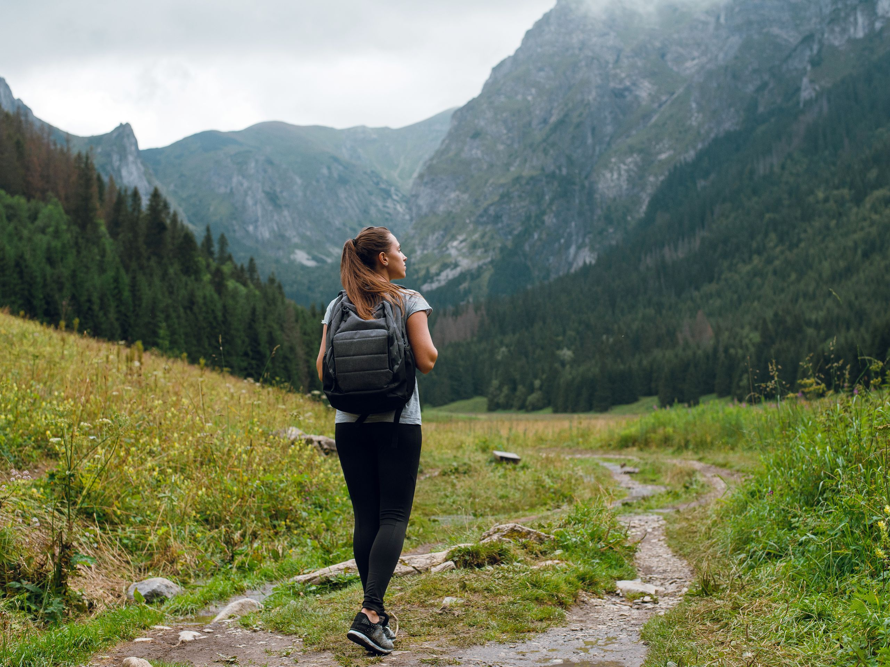

Gear & Planning • Philippines
Best Trails for Beginners
Choose short, well-marked trails with manageable elevation and reliable guides. Check difficulty, weather, and park advisories before starting.
Helpful reminders
- Check official park announcements and local weather before visiting.
- Choose trails suitable for your experience and fitness level.
- Start with short and well-marked hiking routes.
- Follow posted rules and instructions from park staff or guides.
- Wear comfortable hiking shoes with good grip.
- Bring enough drinking water and snacks for the hike.
- Check trail difficulty, distance, and elevation before starting.
- Hike with companions or a qualified guide when possible.
- Take breaks when needed and avoid rushing.
- Respect nature and local communities; take all trash with you.